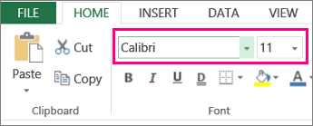
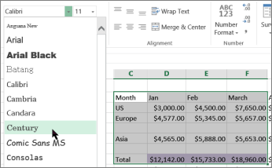
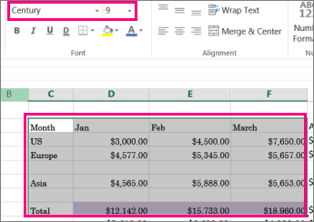

When you enter data in a worksheet, Excel automatically uses the Calibri font style in size11 but if you prefer a different font style or size, here’s how you can change them:

Select the cell or cell range that has the text or number you want to format.
Click the arrow next to Font and pick another font.

To change font size, click the arrow next to the default Font Size and pick the size you want.
In our example below, we’ve changed the font style to Century and size to 9.
